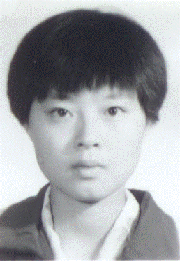

学为天职，天道酬勤
尊敬的各位领导、老师、同学们：
你们好！
我是数学系96级本科学生付梅。1978年3月3日,我出生在山东省新泰市一个普通的家庭。父亲原来只是一名退伍军人，但是凭着个人的努力，他由一个退伍军人到了今天新泰市小有名气的个体经商者。父亲的不畏困难、不停拼搏的精神从小就感染着我，使我养成了不甘人后，肯吃苦的性格。从小学到现在，我都是学习上的佼佼者。除参加了正式的高考外,我一直是一名“保送生”。
今天，作为一名即将毕业的大四学生，回顾四年的大学生活，有亮点，也有缺憾，但无论什么时候我都不断地激励自己人活着一定要有目标，有追求，要为了理想，自强不息。因为，生命有限，努力无
你们好！
我是数学系96级本科学生付梅。1978年3月3日,我出生在山东省新泰市一个普通的家庭。父亲原来只是一名退伍军人，但是凭着个人的努力，他由一个退伍军人到了今天新泰市小有名气的个体经商者。父亲的不畏困难、不停拼搏的精神从小就感染着我，使我养成了不甘人后，肯吃苦的性格。从小学到现在，我都是学习上的佼佼者。除参加了正式的高考外,我一直是一名“保送生”。
今天，作为一名即将毕业的大四学生，回顾四年的大学生活，有亮点，也有缺憾，但无论什么时候我都不断地激励自己人活着一定要有目标，有追求，要为了理想，自强不息。因为，生命有限，努力无
限。1995年，我以全校第一名的成绩考进东北师大数学系。然而内心的激动还未平静，紧张的军训还未让我体味到大学生活的滋味，医院的体检书下来了，我被通知休学一年。我眼含着热泪，与关心自己的同学、老师说了再见，我回了家。95年9月到96年9月，多么漫长的一年啊！我不知道自己打过多少次的点滴，也不知道吃过多少剂药。由于点滴中含有氯离子，每次输液血管都出奇的胀痛，输完后往往是整条胳膊都已经失去了知觉。后来从手背到小臂因打针而全都淤青。中药剂量大而且苦涩，我经常是边服边吐，边吐边服。一旁的父母看了直心疼，但是针再难打也得打，药再难服也得服。我心里明白：未来的求索之路还很长很长，我不能向命运低头。
96年9月份，经过一年的调整，我的身体康复了。我又重新回到了校园，真正的大学生活开始了。一年没怎么拿过书，一切看起来都那么生疏，英语单词也忘记了大半。怎么办？生性好强的我不允许自己说不行。书，一遍遍地看，一遍遍地读，白天不懂，晚上再接着想，每看一次便有一次收获。从此，书的每一页上都记满了密密麻麻的知识点。一本书到后来往往有它以前的两本那么厚，而且成了只有我才能看懂的“私家书”。远方的父母不时地打电话提醒：注意身体。而我表面上是答应了，心里却在想：不奋斗，不拼搏，怎能实现自己的理想？从难到易，从不会到会，点点滴滴不断地积累。第一学年结束，我的考试成绩列全年级第六名。有人说：知足吧。而我却在暗暗的为自己加劲：“这还远远不够。”
不停留于事物表面，我不断地探索专业学习的新方法、新思路，不断地向崭新的知识领域挑战。在长期的学习中不断地积累，我有了自己的学习原则。一是要制定严格的作息时间表——上课、查资料、自修，甚至睡觉都做了统一的规划，这样既易完成学习任务，又能保证充足的休息。二是不断地鼓舞、激励自己，其中“天道酬勤”是我最爱对自己说的话。正是在这两条的原则的指引下，在97到99两个学年四次考试中，我有三次考年级第一，一次第二，专业课门门优秀，平均分也达到97分。并且在此期间，顺利通过国家英语四、六级考试。在大四上学期毕业年级学习排名和综合排队中我均列年级第一名。正是凭着优异的成绩，我先后被评为“长春市文明大学生”、获得“宝钢优秀学生奖学金”，并被保送到南开大学攻读应用数学的硕士研究生。
我一直认为人生的价值不仅体现于有一个完美的结果而关键是你有不停拼搏，自强不息的过程。
99年9月份，我凭着良好的知识基础，有幸代表师大参加了全国大学生数学建模竞赛。这种竞赛已经远非脑力思考那么简单，它需要三个人同心协力，集体的力量在此体现得淋漓尽致。为了准备这场比赛，我们三天三夜一共睡眠不足三个小时。特别是作为数学系的参赛选手,我深知数学论证在其中的重要性，为此，我始终保持着高度集中的心理状态。深夜里我穿着羽绒服坐在静静的教研室内，直觉得周身冰凉，但是笔始终未离开过手，我不停地在纸上一遍一遍地演算，一张张纸上画得满是网网格格，记得当时，我的三支油笔到第三天时有两支不能再用了。三天下来，查资料、写稿、校对、修改，甚至连吃饭时我们也在讨论。当七张论文纸从打印机里输出时，忽然涌来一阵对我而言已显陌生的睡意，如千金重物压在头顶，我趴在冰凉的桌子上睡着了。在那次竞赛中，我所在的小组获得了吉林省二等奖。
四年的求学之路虽非大风大浪，但也不是一帆风顺。记得大三的寒假考试期间，家里突然通知我父亲生病住院了，情况十分危险，父亲说他谁也不想见就想见我。作为女儿，怎能不牵挂远方病重的父亲，边接电话，眼泪边沿着脸颊无声地流淌。多年来，父亲是我心灵深处的一堵墙，为我挡风遮雨，给了我无尽的呵护。每当我累了，我都要去靠一靠。而今这堵墙需要我，而我却在远方。我无心再考试，也吃不下饭，我多么想回家看看，我多么想陪在有病的父亲身边啊。在老师同学的帮助和鼓励下，我强忍着内心的悲痛，参加完了最后两科的考试，才回到了家。在那次考试中，我以全优的成绩列年级第二名。
我一直想，人不可能做完美的人，但每个人都应该努力做一个不断完善自己的人。
四年来，我一直担任年级学生会主要干部，从文艺部长到学科部长再到年级长，无论在什么职位上，我都尽职尽责、勤勤恳恳。每次组织活动，我都是早出晚归、废寝忘食。同寝室的同学有时看不过去就提醒我：身体是革命的本钱。我说：这是我的工作，也是我的责任。为了从各个方面塑造自己，我积级参加各种活动，三次代表系参加校“精英杯”篮球赛，两次参加校“学士杯”足球赛。此外，我还踊跃参加各种演讲赛、辩论赛，以求提高自身的教师技能。有同学问我：“你要学习，你要工作，你要参加活动，你哪里来得那么多时间，你不觉得累吗？”我说：“成功和喜悦总是伴随勤奋、不怕劳累的人。”
有了德，“才”才能发挥的更好，因此，除在学习上严格要求自己外，在思想上我注重自身修养，不断提高自身理论修养。什么事情你想让别人做到时，自己应该首先尽力做到。1998年11月份我实现了多年的梦想，成为一名中共预备党员。作为一名党员，我深知自己行为的示范性。记得在大四上学期实习期间，我所在的实习单位——长春建筑材料工程学校，有位十七岁的小女孩，因血癌正在住院，想到自己对生命的渴望，想到一位花季少女正在遭受病魔的摧残，当时担任实习小组组长的我，想到的是为挽救少女年轻的生命我们应尽一份力量。我首先掏钱，然后再积极组织建材实习的二十名同学捐款赠物。只半天时间，我们便把盛满爱心的钱交到了他们学校团委书记手中。当时，那位书记非常激动，他握着我的手说：“你们师大的学生，这么富有爱心”。在大学生活里，强烈的集体荣誉感时刻围绕着我，我愿意为集体牺牲一切。1999年11月份我顺利转正，成为一名真正的中共党员。
今天，离毕业已不足一个月了，我对师大怀有深厚感情，对母校一草一木恋恋不舍。好在三年后我会学成归来，为母校美好的未来尽自己的一份薄力。我始终相信：勤奋且自强不息的人，总会超越困难走向成功。
96年9月份，经过一年的调整，我的身体康复了。我又重新回到了校园，真正的大学生活开始了。一年没怎么拿过书，一切看起来都那么生疏，英语单词也忘记了大半。怎么办？生性好强的我不允许自己说不行。书，一遍遍地看，一遍遍地读，白天不懂，晚上再接着想，每看一次便有一次收获。从此，书的每一页上都记满了密密麻麻的知识点。一本书到后来往往有它以前的两本那么厚，而且成了只有我才能看懂的“私家书”。远方的父母不时地打电话提醒：注意身体。而我表面上是答应了，心里却在想：不奋斗，不拼搏，怎能实现自己的理想？从难到易，从不会到会，点点滴滴不断地积累。第一学年结束，我的考试成绩列全年级第六名。有人说：知足吧。而我却在暗暗的为自己加劲：“这还远远不够。”
不停留于事物表面，我不断地探索专业学习的新方法、新思路，不断地向崭新的知识领域挑战。在长期的学习中不断地积累，我有了自己的学习原则。一是要制定严格的作息时间表——上课、查资料、自修，甚至睡觉都做了统一的规划，这样既易完成学习任务，又能保证充足的休息。二是不断地鼓舞、激励自己，其中“天道酬勤”是我最爱对自己说的话。正是在这两条的原则的指引下，在97到99两个学年四次考试中，我有三次考年级第一，一次第二，专业课门门优秀，平均分也达到97分。并且在此期间，顺利通过国家英语四、六级考试。在大四上学期毕业年级学习排名和综合排队中我均列年级第一名。正是凭着优异的成绩，我先后被评为“长春市文明大学生”、获得“宝钢优秀学生奖学金”，并被保送到南开大学攻读应用数学的硕士研究生。
我一直认为人生的价值不仅体现于有一个完美的结果而关键是你有不停拼搏，自强不息的过程。
99年9月份，我凭着良好的知识基础，有幸代表师大参加了全国大学生数学建模竞赛。这种竞赛已经远非脑力思考那么简单，它需要三个人同心协力，集体的力量在此体现得淋漓尽致。为了准备这场比赛，我们三天三夜一共睡眠不足三个小时。特别是作为数学系的参赛选手,我深知数学论证在其中的重要性，为此，我始终保持着高度集中的心理状态。深夜里我穿着羽绒服坐在静静的教研室内，直觉得周身冰凉，但是笔始终未离开过手，我不停地在纸上一遍一遍地演算，一张张纸上画得满是网网格格，记得当时，我的三支油笔到第三天时有两支不能再用了。三天下来，查资料、写稿、校对、修改，甚至连吃饭时我们也在讨论。当七张论文纸从打印机里输出时，忽然涌来一阵对我而言已显陌生的睡意，如千金重物压在头顶，我趴在冰凉的桌子上睡着了。在那次竞赛中，我所在的小组获得了吉林省二等奖。
四年的求学之路虽非大风大浪，但也不是一帆风顺。记得大三的寒假考试期间，家里突然通知我父亲生病住院了，情况十分危险，父亲说他谁也不想见就想见我。作为女儿，怎能不牵挂远方病重的父亲，边接电话，眼泪边沿着脸颊无声地流淌。多年来，父亲是我心灵深处的一堵墙，为我挡风遮雨，给了我无尽的呵护。每当我累了，我都要去靠一靠。而今这堵墙需要我，而我却在远方。我无心再考试，也吃不下饭，我多么想回家看看，我多么想陪在有病的父亲身边啊。在老师同学的帮助和鼓励下，我强忍着内心的悲痛，参加完了最后两科的考试，才回到了家。在那次考试中，我以全优的成绩列年级第二名。
我一直想，人不可能做完美的人，但每个人都应该努力做一个不断完善自己的人。
四年来，我一直担任年级学生会主要干部，从文艺部长到学科部长再到年级长，无论在什么职位上，我都尽职尽责、勤勤恳恳。每次组织活动，我都是早出晚归、废寝忘食。同寝室的同学有时看不过去就提醒我：身体是革命的本钱。我说：这是我的工作，也是我的责任。为了从各个方面塑造自己，我积级参加各种活动，三次代表系参加校“精英杯”篮球赛，两次参加校“学士杯”足球赛。此外，我还踊跃参加各种演讲赛、辩论赛，以求提高自身的教师技能。有同学问我：“你要学习，你要工作，你要参加活动，你哪里来得那么多时间，你不觉得累吗？”我说：“成功和喜悦总是伴随勤奋、不怕劳累的人。”
有了德，“才”才能发挥的更好，因此，除在学习上严格要求自己外，在思想上我注重自身修养，不断提高自身理论修养。什么事情你想让别人做到时，自己应该首先尽力做到。1998年11月份我实现了多年的梦想，成为一名中共预备党员。作为一名党员，我深知自己行为的示范性。记得在大四上学期实习期间，我所在的实习单位——长春建筑材料工程学校，有位十七岁的小女孩，因血癌正在住院，想到自己对生命的渴望，想到一位花季少女正在遭受病魔的摧残，当时担任实习小组组长的我，想到的是为挽救少女年轻的生命我们应尽一份力量。我首先掏钱，然后再积极组织建材实习的二十名同学捐款赠物。只半天时间，我们便把盛满爱心的钱交到了他们学校团委书记手中。当时，那位书记非常激动，他握着我的手说：“你们师大的学生，这么富有爱心”。在大学生活里，强烈的集体荣誉感时刻围绕着我，我愿意为集体牺牲一切。1999年11月份我顺利转正，成为一名真正的中共党员。
今天，离毕业已不足一个月了，我对师大怀有深厚感情，对母校一草一木恋恋不舍。好在三年后我会学成归来，为母校美好的未来尽自己的一份薄力。我始终相信：勤奋且自强不息的人，总会超越困难走向成功。